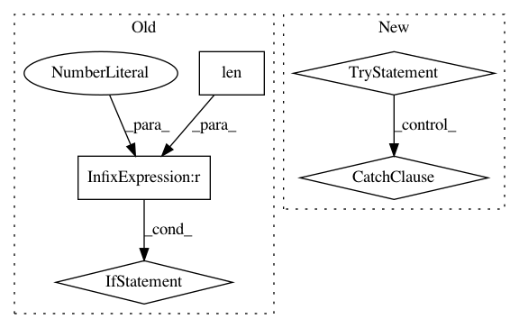

85197deece837a1f4ffdbbffb72af6028a9b6e32,python/ray/autoscaler/_private/resource_demand_scheduler.py,ResourceDemandScheduler,_infer_legacy_node_resources_if_needed,#ResourceDemandScheduler#Any#,201
Before Change
iter(max_resources_by_ip.values()))
// We fill the worker node resources only once.
if not self.node_types[NODE_TYPE_LEGACY_WORKER]["resources"]:
if len(max_resources_by_ip) > 1:
// Set the node_types here as we already launched a worker node
// from which we directly get the node_resources.
worker_nodes = self.provider.non_terminated_nodes(
tag_filters={TAG_RAY_NODE_KIND: NODE_KIND_WORKER})
worker_node_ips = [
self.provider.internal_ip(node_id)
for node_id in worker_nodes
]
for ip in worker_node_ips:
if ip in max_resources_by_ip:
self.node_types[NODE_TYPE_LEGACY_WORKER][
"resources"] = max_resources_by_ip[ip]
assert self.node_types[NODE_TYPE_LEGACY_WORKER]["resources"]
def _get_concurrent_resource_demand_to_launch(
self,
to_launch: Dict[NodeType, int],
connected_nodes: List[NodeIP],
After Change
// We fill the head node resources only once.
if not self.node_types[NODE_TYPE_LEGACY_HEAD]["resources"]:
try:
head_ip = self.provider.internal_ip(
self.provider.non_terminated_nodes({
TAG_RAY_NODE_KIND: NODE_KIND_HEAD
})[0])
self.node_types[NODE_TYPE_LEGACY_HEAD]["resources"] = \
copy.deepcopy(max_resources_by_ip[head_ip])
except (IndexError, KeyError):
logger.exception("Could not reach the head node.")
// We fill the worker node resources only once.
if not self.node_types[NODE_TYPE_LEGACY_WORKER]["resources"]:
// Set the node_types here in case we already launched a worker node
// from which we can directly get the node_resources.
worker_nodes = self.provider.non_terminated_nodes(
In pattern: SUPERPATTERN
Frequency: 3
Non-data size: 5
Instances
Project Name: ray-project/ray
Commit Name: 85197deece837a1f4ffdbbffb72af6028a9b6e32
Time: 2020-11-11
Author: ameerh@berkeley.edu
File Name: python/ray/autoscaler/_private/resource_demand_scheduler.py
Class Name: ResourceDemandScheduler
Method Name: _infer_legacy_node_resources_if_needed
Project Name: ray-project/ray
Commit Name: 96c2d3d2b50a25821336ed2b56daa187f293ef09
Time: 2021-01-05
Author: krfricke@users.noreply.github.com
File Name: python/ray/tune/sample.py
Class Name: Function
Method Name: __init__
Project Name: asyml/texar
Commit Name: af461df627ef660d1a71b6981dedb4e4b504ba9a
Time: 2017-09-25
Author: junxianh2@gmail.com
File Name: txtgen/modules/connectors/connectors.py
Class Name: StochasticConnector
Method Name: _build